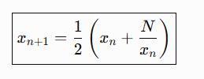

Alumno/a: Cristian González Mateo Grupo: 2ºDAW Fecha: 16/10/2026
Completa cada bloque <script> directamente, sin crear funciones. Los ejercicios se ejecutan al abrir la
página. Escribe el HTML de cada respuesta en su variable salidaN; la última línea ya lo muestra en
pantalla.
Importante: utiliza nombres de variables distintos en cada ejercicio (por ejemplo, numero1Ej1), ya que todos los scripts comparten el mismo ámbito global.
Solicita tres números enteros A, B y C mediante prompt(). Si A es mayor que 10, calcula (A + B) × C; en otro caso, (B − C) × A. Si alguno no es entero, muestra un error.
Crea ejemplos de number, string, boolean, undefined, null, bigint, symbol, Array, Object y Date. Genera una tabla HTML con typeof y, cuando corresponda, instanceof. Explica el caso de null y cómo detectar un array.
Solicita un entero del 1 al 4. Muestra 1: Primavera, 2: Verano, 3: Otoño, 4: Invierno. Usa únicamente ternarios encadenados para seleccionar la estación. Informa de cualquier valor no válido.
Solicita dos enteros entre 0 y 255 y una operación: AND (&), OR (|), XOR (^), IZQ (<<) o DER (>>). Para desplazamientos, el segundo número debe estar entre 0 y 7. Usa if / else if y muestra operandos y resultado en decimal y binario.
Solicita una opción entera del 1 al 10. Para 1, 2 y 3 muestra mensajes acumulativos: «Nivel básico alcanzado», «Nivel intermedio alcanzado» y «Nivel avanzado alcanzado» (para 3 salen los tres). Para 4, 5 o 6: «Nivel profesional». Para 8: «Nivel experto». Para 9: «Nivel maestro». En otros casos: «Opción no válida». Utiliza switch y break en los lugares adecuados.
Solicita un entero N entre 1 y 10. Genera una tabla HTML de N filas y N columnas con el producto de fila × columna. Usa dos bucles anidados y asigna a cada columna un color del array dado.
Colores: array proporcionado en el script.
Recorre el objeto producto mediante el bucle más adecuado. Muestra una tabla con cada propiedad y su valor. Los números se mostrarán con progress (calidad: máximo 10; precio: máximo 1000; para velocidad y catálogo elige un máximo razonable). Para colores, crea una tabla anidada cuyas celdas tengan esos colores de fondo. Para disponible, muestra Sí o No.
Objeto: proporcionado en el script.
Recorre el array animales y genera una galería HTML. Cada imagen estará en img/nombreAnimal.jpg, tendrá tamaño 120 × 120 píxeles y un atributo alt adecuado. Debajo aparecerá el nombre del animal.
Array: proporcionado en el script.
